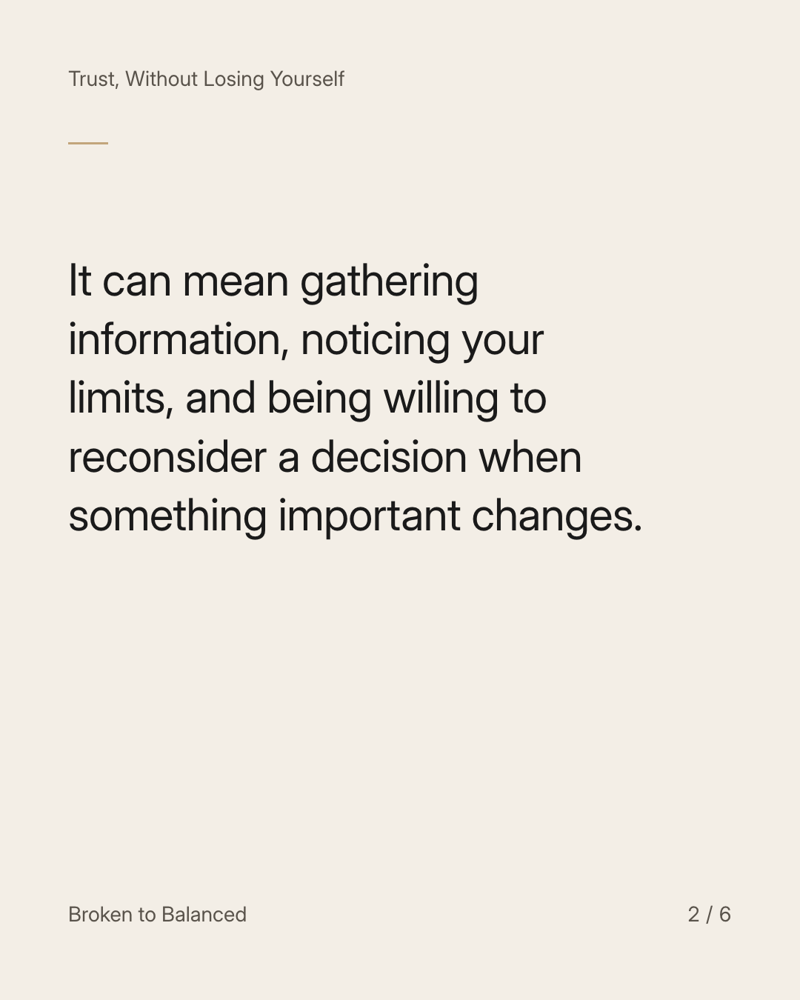
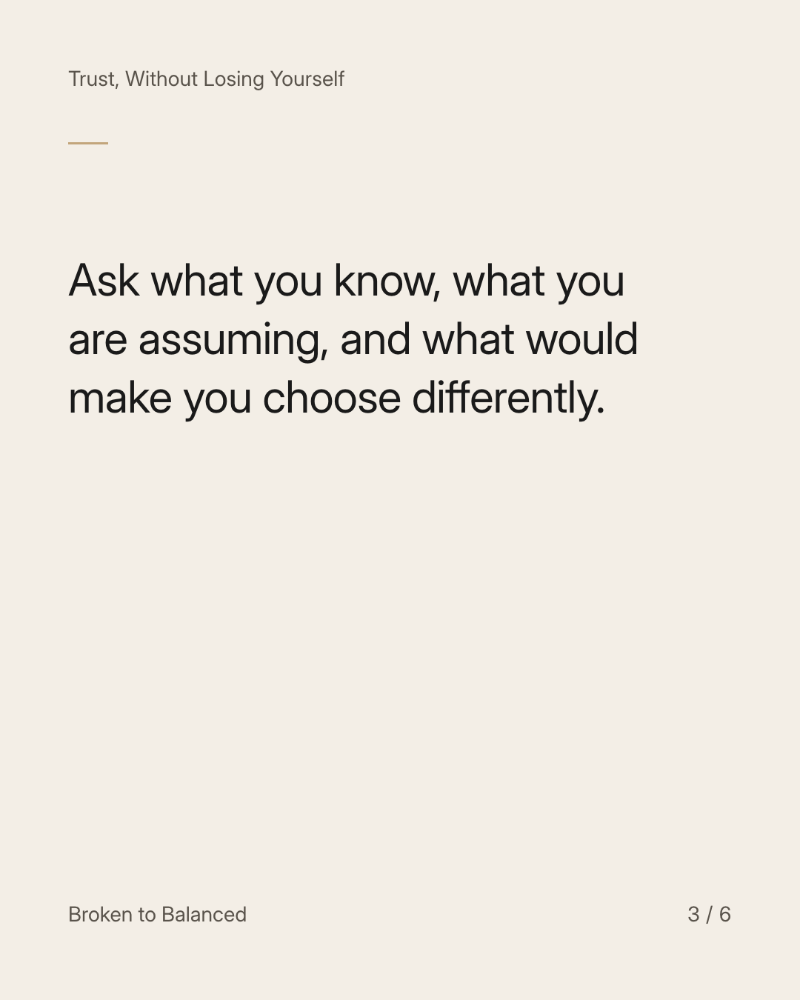
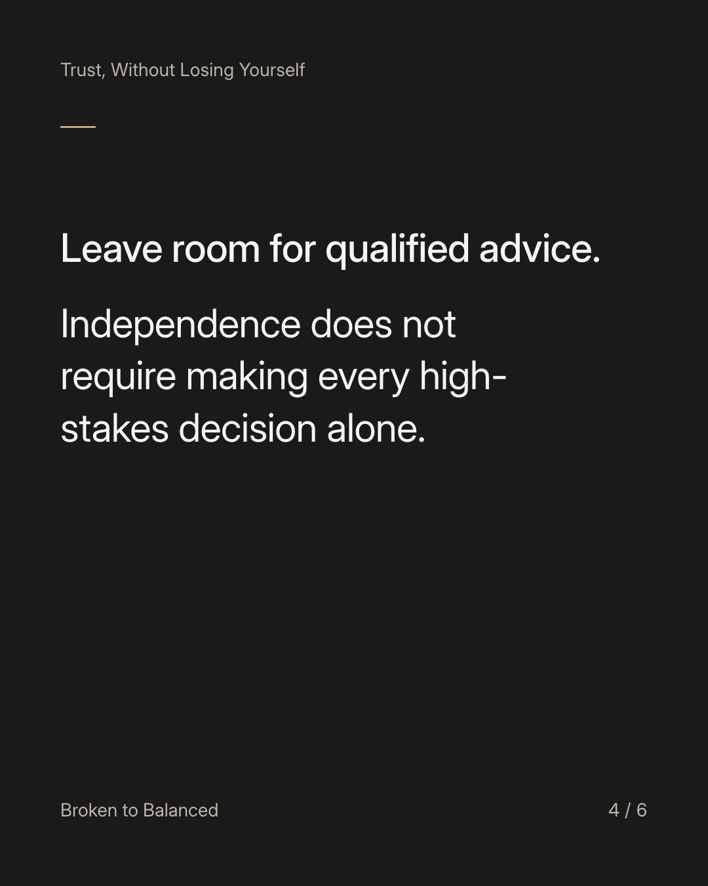
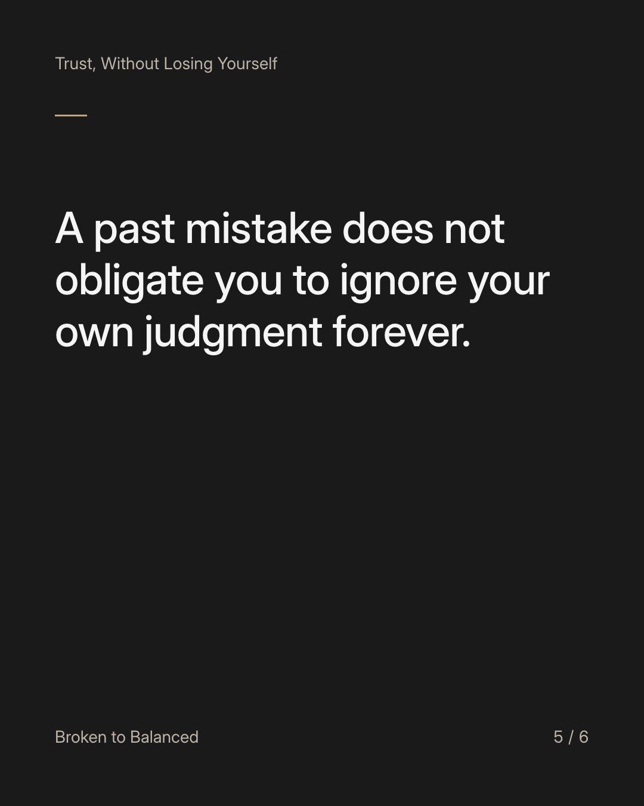
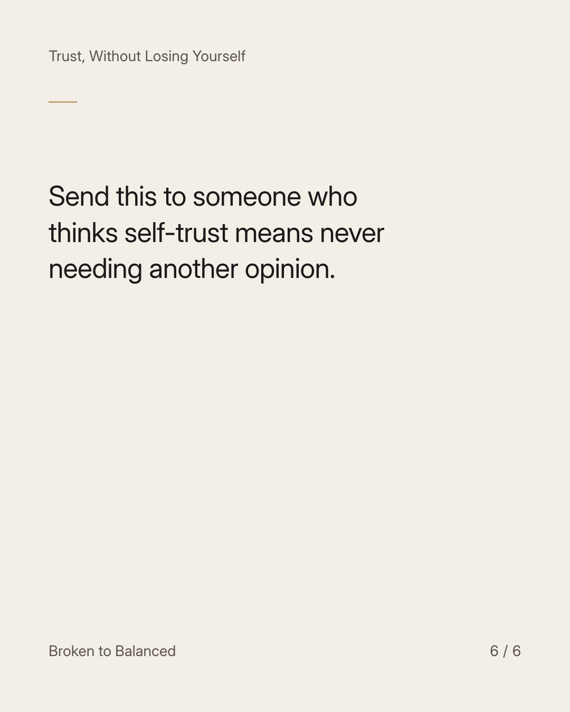

Exact text and accessibility text
Trusting yourself does not mean being certain every time.
Slide 1 of 6. Trusting yourself does not mean being certain every time.


Exact text and accessibility text
It can mean gathering information, noticing your limits, and being willing to reconsider a decision when something important changes.
Slide 2 of 6. It can mean gathering information, noticing your limits, and being willing to reconsider a decision when something important changes.


Exact text and accessibility text
Ask what you know, what you are assuming, and what would make you choose differently.
Slide 3 of 6. Ask what you know, what you are assuming, and what would make you choose differently.


Exact text and accessibility text
Leave room for qualified advice. Independence does not require making every high-stakes decision alone.
Slide 4 of 6. Leave room for qualified advice. Independence does not require making every high-stakes decision alone.


Exact text and accessibility text
A past mistake does not obligate you to ignore your own judgment forever.
Slide 5 of 6. A past mistake does not obligate you to ignore your own judgment forever.


Exact text and accessibility text
Send this to someone who thinks self-trust means never needing another opinion.
Slide 6 of 6. Send this to someone who thinks self-trust means never needing another opinion.
Exact caption
Plain-text fallback: select and copy the caption.